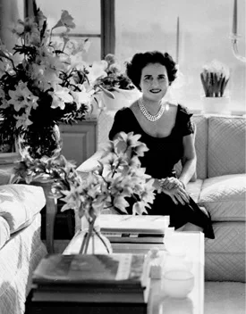

1. The disease strikes the family leading the campaign
In 1951, Albert Lasker was diagnosed with colon cancer. Surgeons attempted to remove the tumor, but they discovered spread into nearby lymph nodes. The disease had progressed beyond what surgery could reliably cure.
The irony was devastating. Mary and Albert had used their influence to remind Americans of the danger of cancer. Now Albert had become one of the patients whose lives their campaign was trying to protect. Mary searched for help from physicians, including Sidney Farber, and inquired about possible experimental treatments. There was little anyone could offer.
Albert died on May 30, 1952. His death changed Mary's mission. She gradually returned to fundraisers and social events, but she was no longer satisfied with increasing general awareness. She wanted a mechanism capable of delivering actual treatments and cures. The fight against cancer became more personal and more urgent.
2. Farber's own health is threatened
Mukherjee also describes Sidney Farber's private experience with serious bowel disease. Farber suffered from chronic intestinal inflammation and underwent an operation to remove his diseased colon. The author notes uncertainty about whether a cancer was found and respects the family's unwillingness to settle that question publicly.
What is clear is that Farber's experience with illness sharpened his sense of urgency. Patients with a life-threatening cancer could not wait for scientists to understand every mechanism before trying treatments.
This perspective mattered because it challenged the dominant postwar philosophy of medical research. Farber increasingly insisted that useful treatments might be discovered before doctors fully understood how those treatments worked. His own antifolate work seemed to prove it.
3. A fundamental disagreement: How should scientific progress be organized?
Mary and Farber wanted a goal-driven national program: identify promising chemicals, test them efficiently, and keep moving toward cures. But many scientists defended a different idea—support researchers to study the fundamental processes of nature without requiring immediate practical results.
These positions sound similar, but they lead to different decisions about funding.
| Basic, curiosity-driven research | Goal-directed or programmatic research |
|---|---|
| Starts with an unanswered scientific question | Starts with a practical problem to solve |
| Researchers choose which mechanisms to investigate | Programs coordinate work toward defined objectives |
| Results may not have immediate medical application | Success is often measured by usable discoveries |
| Can reveal unexpected new principles | Can rapidly apply knowledge and organize resources |
Neither model is inherently enough on its own. A cure may depend on deep discoveries nobody knew to ask for, but patients also need those discoveries turned into real treatments.

4. Vannevar Bush and the wartime model of science
Mukherjee introduces Vannevar Bush, an influential engineer who helped organize American scientific research during World War II. The wartime government had assembled teams to work on urgent technical problems: radar, military equipment, communication systems, and ultimately the atomic bomb.
This was organized science with specific missions, budgets, deadlines, and teams. The Manhattan Project became the most spectacular example. It suggested that an enormous scientific problem could be tackled by concentrating talent and money on one target.
But Bush drew a subtle lesson from the experience. The atomic bomb had become technically possible because researchers had spent decades discovering the fundamental principles of atoms and physics. Those earlier scientists were not working toward a bomb; they were trying to understand nature.
The Manhattan Project had applied knowledge built by generations of basic research. In Bush's view, the project should not be mistaken for proof that scientific discovery could always be ordered on demand.
5. The “endless frontier” versus a cancer campaign
In 1945 Bush published a famous report, Science, the Endless Frontier. He argued that government should fund independent scientific investigation, even when its immediate applications were uncertain. This philosophy helped shape postwar institutions such as the National Science Foundation and the research culture surrounding the NIH.
For the Laskerites, the idea felt far too patient. Their question was not whether general science was valuable. It was whether people dying of cancer should have to wait until biologists had answered every fundamental question.
Farber had treated leukemia using antifolates even though he did not possess a complete molecular explanation of cancer. Mary asked why a similarly direct effort could not be expanded with more money and coordinated planning.
The conflict: Bush believed practical advances depended on a foundation of open-ended discoveries. Farber and Lasker believed the government could accelerate practical treatments by urgently organizing an attack on cancer.
6. The Cancer Chemotherapy National Service Center
The Laskerites pushed for a federal program devoted specifically to discovering anticancer drugs. In 1954 Congress supported the creation of a directed drug-search effort, and by 1955 the Cancer Chemotherapy National Service Center (CCNSC) was operating.
Its approach was to examine vast numbers of chemicals and test which might suppress cancers in laboratory systems and animals. Between 1954 and 1964, the book reports testing tens of thousands of synthetic substances, plant derivatives, and fermentation products, with nearly a million mice used annually.
This changed the way cancer drugs could be discovered. Instead of waiting for a scientist to have a singular insight, researchers could systematically screen huge libraries of possible treatments.
But there was a limitation. A molecule that shrinks a mouse tumor is not automatically a safe or effective human medicine. The program could find candidates; clinical research still had to prove their usefulness.
7. Actinomycin D: An antibiotic becomes an anticancer drug
Farber was also searching for new drugs in Boston. He contacted Selman Waksman, a scientist who had studied antibiotics produced by soil microorganisms. One of these substances, actinomycin D, could injure DNA and interfere with cell growth.
It was too damaging to human cells to be an ordinary antibiotic. But Farber wondered whether precisely that toxicity might make it useful against malignant cells.
Tests in mice showed striking tumor responses. Farber then explored its use in childhood tumors, including Wilms' tumor, a kidney cancer found in children. Responses to actinomycin D expanded his hope that chemotherapy might work beyond leukemia.
This is an important pattern in scientific history: a substance can fail at one intended purpose but become useful for a different one. Its biological activity matters more than the label under which it was originally discovered.
8. The limits and contradictions of the Jimmy Fund clinic
Mukherjee does not allow the account of new drugs to become a simple story of triumph. He introduces Sonja Goldstein, whose young son David was treated for Wilms' tumor at Farber's clinic in 1956.
Sonja found the ward simultaneously hopeful and heartbreaking. It had cheerful decorations and inventive little carts that helped children move while receiving intravenous medicines. Yet many patients were extremely weak, severely disfigured by tumors, or at risk of dying at any moment.
The parents lived in a world where every bruise, fever, or small change might signal catastrophe. Children played, but adults watched them constantly. Farber's institution had become a place where hopeful experimental science and recurrent death occupied the same corridor.

9. Farber's idea of “total care”
Farber believed that a patient with cancer needed far more than a drug. His clinical rounds involved nurses, social workers, doctors, nutrition specialists, and other caregivers. He called this integrated approach total care.
A disease can damage physical health, but it also affects a person's family, social life, emotions, finances, and sense of identity. Caring for only the tumor leaves much of the illness untouched.
Nevertheless, total care could not save every child. Sonja described watching families emerge from hospital rooms after a child's death, receiving their remaining belongings in a brown paper bag. Her own son David died after his cancer spread. Her story is a painful correction to the public image of chemotherapy as an unstoppable march toward victory.
10. Returning to Carla Reed: Treatment as a sequence of ordeals
The chapter returns to Carla Reed, the young mother with leukemia from the Prologue. She is confined in a sterile hospital room, separated from ordinary family life. Her husband visits, and her children arrive wearing protective equipment. Her isolation becomes emotional as well as physical.
Carla repeatedly considers the survival estimate she was given: roughly thirty percent in her particular situation at that time. The numbers become a private obsession. But she still must decide whether to undergo months and years of difficult treatment.
Mukherjee explains her plan as several connected phases:
- Induction: Intensive chemotherapy aims to bring the leukemia into remission. Her normal blood-cell counts may fall dangerously low.
- Consolidation or intensification: Further drug treatment aims to reduce the risk of residual leukemia growing again.
- Central nervous system treatment: Drugs may be injected into spinal fluid, with brain-directed treatment used because leukemia can hide behind the blood–brain barrier.
- Maintenance: Additional therapy seeks to preserve remission over a longer period.
These are the phases described in the book for Carla's 2004 treatment; individual protocols and modern practices vary.
11. Why the blood–brain barrier matters
The blood–brain barrier helps protect the brain by limiting entry of many substances circulating in the blood. Unfortunately, it can also prevent some anticancer drugs from reaching leukemia cells in the brain or spinal fluid.
Imagine a city with a heavily guarded wall. The wall protects its inhabitants from attackers—but it can also shield an enemy already hiding inside. For leukemia, the nervous system can become a protected location for surviving malignant cells.
Carla's planned spinal injections and radiation are examples of treatment aimed at that problem. Later chapters show why discovering this hidden sanctuary transformed childhood leukemia therapy.
12. The deeper meaning: urgency and uncertainty coexist
This chapter connects four worlds: a family struck by cancer, a political disagreement about research funding, laboratories screening drugs, and a hospital ward filled with desperately ill people. Mary and Farber want faster progress because the human cost of delay is real. Bush's defenders insist that rushed, directed projects may not reveal the fundamental knowledge needed for durable success.
The patients complicate both positions. Hope without evidence can become false hope. But waiting for complete understanding while patients die also has a cost. The right answer is not simply “move faster” or “be more cautious”; it is to develop useful knowledge and responsible treatments together.
Chapter takeaway: Farber and Lasker transform personal grief into a demand for organized research. The resulting drug programs produce genuine possibilities, but the suffering at the Jimmy Fund and Carla's difficult treatment reveal how far cancer medicine still has to travel.